Nằm cao nguyên Lâm Viên độ cao 1500m so với mực nước biển, khi hậu mát mẻ dễ chịu. Tour Du lịch Đà Lạt được nhiều du khách lựa chọn làm điểm đến hàng đầu trong những dịp lễ, hè,…
Với một vẻ đẹp mộng mơ, thành phố Đà Lạt còn có nhiều tên gọi khác như “thành phố ngàn hoa” hàng năm lễ hội hoa Đà Lạt được tổ chức hàng năm với sự hưởng ứng nhiệt tình của đông đảo người dân và du khách thập phương.
Thành phố Đà Lạt là điểm du lịch nổi tiếng với nhiều cái không thú vị” không đèn giao thông, không cảnh sát tại các ngã tư đường, không điều hoà, không có báo Lâm Đồng và các quầy sạp báo ở thành phố Đà Lạt….
Với nhiều du khách khi đi Tour du lịch Đà Lạt thích thú với khí hậu nơi đây, nhiệt độ trung bình cao nhất trong ngày là 24 độ c, lượng mưa trung bình năm là 1.755mm. Mùa khô diễn ra vào tháng 12 năm trước đến tháng 3 năm sau. Còn mùa mưa thì từ tháng 4 đến tháng 11, trong các mùa trong năm đều có nắng.
Tỉnh Lâm Đồng là tỉnh trên cao nguyên Tây Nguyên, về phía bắc tỉnh có hai dãy núi song song từ đông sang tây, dãy núi phía nam sát ngay thành phố Đà Lạt có các đỉnh Đan Sê Na cao 1.950m, đỉnh Lang Biang cao 2.163m và Hoà Nga cao 1.948m. Giữa hai dãy núi này chính là nơi bắt nguồn của các con sông Đa Dung, sông Cáy, phía nam của hai dãy núi là cao nguyên Lang Biang, trong đó có thành phố Đà Lạt nằm ở độ cao 1.475m.
Thành phố Đà Lạt có nhiều cảnh đẹp, nhiều thác nước và rừng thông, trong số đó nhiều hồ đẹp như Hồ Xuân Hương, hồ Đa Thiện, hồ Than Thở, hồ Vạn Kiếp, hồ Mê Linh, đều nằm ngay trong thành phố Đà Lạt, về các thác có các thác Cam Ly, thác Datanla, đều gần thành phố Đà Lạt.
Về rừng thông, cho đến nay tp Đà Lạt bảo vệ và phát triển tốt vừa tạo thêm vẻ đẹp về yếu tố sinh thái rừng và đây cũng là một loại tài nguyên du lịch hấp dẫn du khách. Trước những hành trình du lịch Đà Lạt, du khách hãy chuẩn bị những hành trang cho tốt. Hãy cùng Du Lịch Việt điểm qua những kinh nghiệm quý giá về du lịch Đà Lạt dưới đây.
Thời điểm Đi Tour Du Lịch Đà Lạt thích hợp.
Đà Lạt là thành phố du lịch nổi tiếng, có khí hậu mát mẻ quanh năm, chính vì vậy, bạn có thể đến đây du lịch với mọi tháng trong năm, mỗi thời điểm sẽ có một vẻ đẹp riêng, tuỳ theo sở thích của du khách có thể lên Đà Lạt để thăm quan.
Nếu du khách muốn ngắm hoa đào nở rộ xung quanh Hồ Xuân Hương thì có thể đến vào tháng 2 đến tháng 4. Các nhành hoa phượng tím nở rộ, khoe sắc lung linh trong nắng gió sẽ chào đón quý khách.
Trong những ngày mưa, đến rồi bất chợt đi, cảnh quang Đà Lạt khiến du khách ngỡ ngàng. Dư âm trong chuyến du lịch Đà Lạt trong mùa hè càng làm cho du khách thêm nỗi nhớ khôn nguôi.
Với du khách đến đây vào tháng 8, sẽ bị hấp dẫn bởi những dòng thác chảy trắng xoá tuôn trào tại thác Pren, thác Pôngur, thác Dambri,…
Vào những tháng cuối năm 10, 11, 12, sẽ phảng phất những áng sương mây lơ lửng, bầu trời mang màu xanh ngắt, chính thời điểm này là lúc hoa dã quỳ nở rộ hương thơm ngát. Bên cạnh đó là những đoá Mimosa mỏng manh e ấp, mọc trên khắp các triền đồi, cánh đồng cải trắng, vườn hoa hướng dương, vườn hồng lung linh,…khiến nơi đây đẹp như tranh vẽ.
Cách Đi Đến Đà Lạt.
Đà lạt là thành phố du lịch nổi tiếng, trên cao nguyên Lâm Viên. Hiện nhiều hạ tầng đã được đầu tư xây dựng, phục vụ cho quá trình đi lại của du khách, bạn có thể lựa chọn một số phương tiện để đến đây.
Máy Bay.
Nếu bạn từ nơi xa như Hà Nội, Hải Phòng, tp hồ Chí Minh, Cần Thơ, Đà Nẵng, muốn du lịch Đà Lạt có thể đi máy bay đến sân bay Liên Khương, nơi đây cách trung tâm tp Đà Lạt 30km về hướng nam. Du khách có thể chọn một số hãng hàng không lớn: vietnam airlines, Jetstar, Vietjet Air,…
Xe khách
Với du khách muốn tiết kiệm chi phí hay ngắm cảnh đẹp núi rừng Tây Nguyên có thể thể chọn lựa những những hãng xe khách, tuy nhiên bạn sẽ mất thời gian nhiều hơn. Khi đến Đà Lạt, bạn nên chọn những khách sạn, nhà nghỉ xung quanh Hồ Xuân Hương, chợ Đà Lạt để tiện cho hành trình thăm quan thành phố ngàn hoa.
Phương Tiện Đi Lại Tại Đà lạt.
Đà Lạt là thành phố du lịch nổi tiếng, không tín hiệu đèn giao thông. Phương tiện đi lại thuận tiện nhất được đông đảo du khách sử dụng là xe máy, giá thuê xe là 100k/ngày. Bạn có thể liên hệ với chủ khách sạn, nhà nghỉ bạn đang thuê ở để thuê thêm xe. Với một chiếc xe máy nhỏ gọn, bạn có thể đi đến mọi nẻo đường trên thành phố Đà Lạt.
Với nhóm người muốn khám phá Đà Lạt có thể thuê ô tô sẽ thích hợp hơn hoặc thuê taxi chở người lớn, trẻ em sẽ tiện cho việc di chuyển hơn.
Địa Điểm Tour Du lịch Đà Lạt.
Một khi du lịch Đà Lạt, du khách không thể bỏ lỡ những ngọn thác nổi tiếng:
Thác Pongour: Còn có tên gọi là thác Thiên Nhai, nằm ở huyện Đức Trọng, cách tp Đà Lạt 50km. Thác Pongour có 7 tầng, có độ cao 40m, trải rộng hơn 100m, xung quanh là thảm thực vật phong phú, đa dạng, cuốn hút nhiều du khách thăm quan.
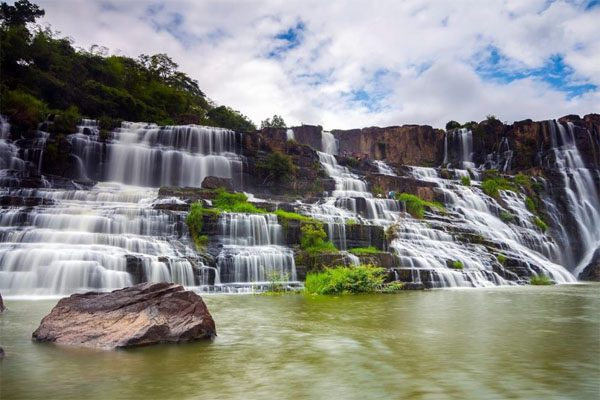
Thác Prenn: Nếu bạn đến đây vào mùa mưa, nhìn dòng thác sẽ trông như chiếc cổng chào lớn. Bạn sẽ bị hấp dẫn bởi vẻ đẹp của nơi đây, thiên nhiên hùng vĩ hoang sơ. Khi đứng trên ngọn thác, phóng tầm nhìn ra xa, bạn sẽ thấy cảnh đồi thông hiện ra một cách tráng lệ.
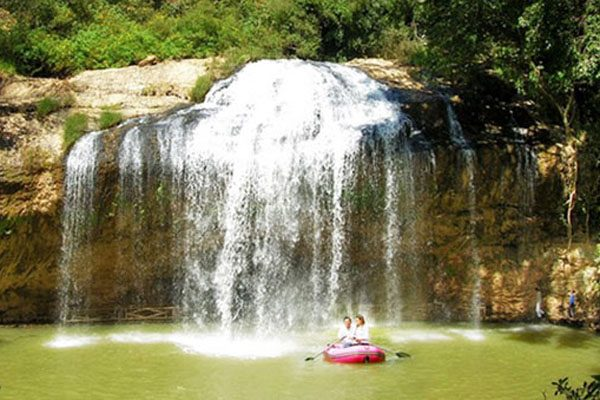
Thác Dambri: Thác này hình thành hai dòng chảy hùng vĩ ở độ cao 40m. Để lên được thác, du khách phải đi bộ bước lên 138 bậc thang đã được sắp sẵn một cách vuông vắn. Tại đây có nhiều trò chơi thú vị đang chờ đón bạn như trượt máng dài 1.650m, đây là trò chơi cảm giác mạnh. Nếu bạn thích có thể đi khám phá cảnh rừng nguyên sinh, đốt lửa trại đêm,…
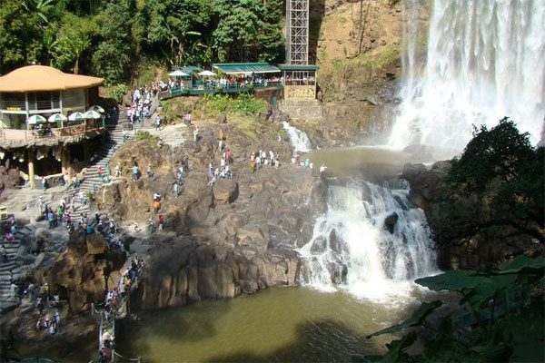
Thác Datanla: là thác chảy trên 7 tầng núi đá, từ trên cao chảy xuống tạo nên những bọt nước trắng xoá. Tại đây, du khách có thể thám hiểm những điều kỳ thú, những trò chơi hấp dẫn trèo đèo, vượt thác hấp dẫn.
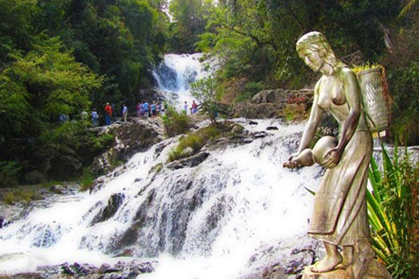
Thác Cam Ly: mang một vẻ đẹp huyền bí, thác này hình thành với một truyền thuyết đầy thú vị. Thác mang vẻ đẹp dịu dàng, nhờ vẻ đẹp này, thác đã đi vào hình ảnh những bài thơ của những nhà thơ nổi tiếng.
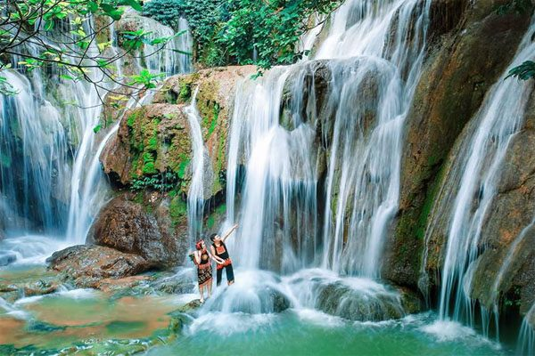
Một Số Hồ nước Đẹp Quyến Rũ Tại Đà Lạt.
Hồ Xuân Hương: Là hồ nước tự nhiên rộng lớn và là vẻ đẹp tượng trưng cho thành phố Đà Lạt. Nơi hồ này luôn đông đúc du khách thăm quan từ lúc sáng tinh mơ cho đến buổi chiều tà. Nhiều trò chơi thú vị bạn có thể tham gia như đạp vịt, xe đạp đôi, thưởng thức những tách cafe đậm đặc thơm ngon tại nhà trên mặt hồ.
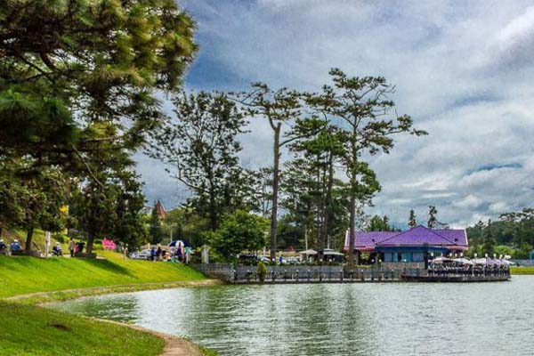
Hồ Đa Nhim: tại thị trấn Dran cách tp Đà Lạt 40km, còn có tên là hồ Đơn Dương. Hồ nằm tại khung cảnh thiên nhiên hài hoà, giữa non nước trong xanh. Tại đây du khách có thể khám phá đèo Ngoạn Mục, một trong những ngọn đèo lớn nhất của nước ta.
Hồ Tuyền Lâm: Quanh hồ là nhiều vườn hoa rực rỡ, đầy đủ sắc màu. Hồ cách trung tâm 7km có cánh rừng nguyên sinh mát mẻ, không khí trong lành.
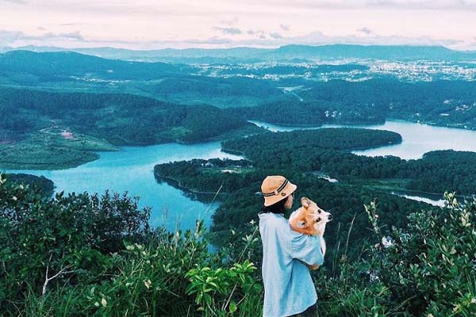
Hồ Dankia – hồ Suối Vàng: cách tp Đà Lạt 12km, suốt chặng đường là khung cảnh thơ mộng khiến du khách như lạc vào cảnh thần tiên, đây là điểm dã ngoại cuối tuần hấp dẫn cho du khách.
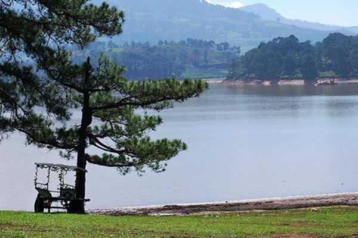
Hồ Than Thở: ở phía bắc tp Đà lạt, trên một ngọn đồi cao, được bao quanh bởi đồi thông đẹp thơ mộng.
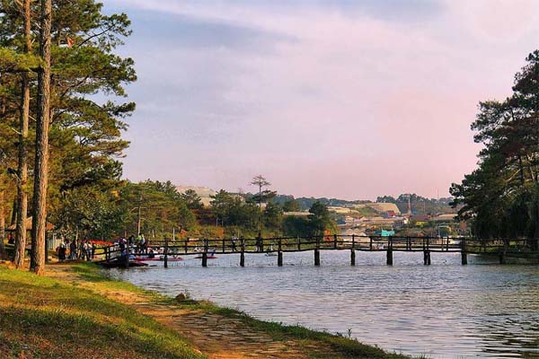
Một số địa Danh Du lịch Đà Lạt.
Ga Xe lửa Đà Lạt: là điểm thăm quan có ý nghĩa quan trọng với sự phát triển của tp Đà lạt. Ga được xây dựng vào năm 1932 trong thời gian 6 năm. Hiện ga Đà Lạt này không còn hoạt động, mà chỉ phục vụ cho du khách du lịch tuyến thành phố Trại Mát. Khách sạn ở ga xe lửa cổ Đà lạt cũng có nhiều du khách đến thăm quan.
Vườn Hoa Đà Lạt: Nơi đây nằm tại trung tâm thành phố, với nhiều loài hoa đẹp là điểm check in lý tưởng cho du khách mỗi khi thăm quan.
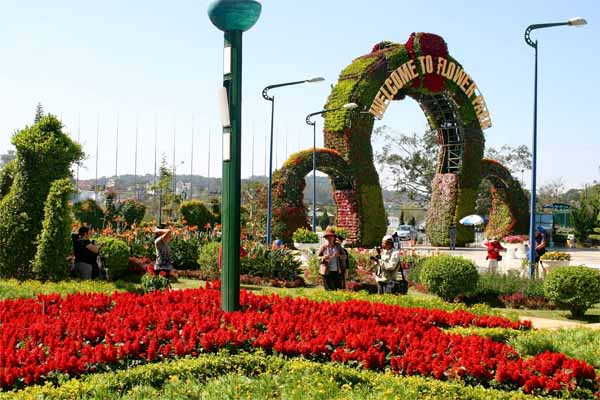
Thung lũng Tình Yêu: nằm khá gần trung tâm Đà Lạt chỉ với 5km, diện tích 140ha. Đây là khu du lịch thơ mộng lôi cuốn những cặp tình nhân đến thăm quan, lưu lại những tấm hình đẹp tại những khoảnh khắc đẹp nhất ở tuổi thanh xuân.
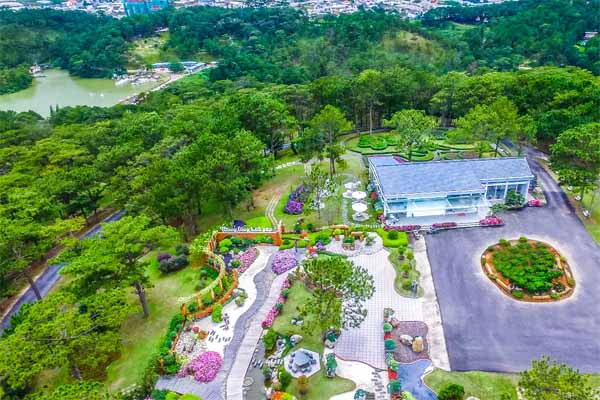
Làng Cù Lần: Tại đây du khách sẽ được khám phá nét độc đáo trong nền văn hoá của người dân tộc K’ho. Bên cạnh đó, bạn sẽ được thăm quan những thôn suối cạn, xã Lát, huyện Lạc Dương. Nhiều khách cảm thấy thích thú với địa điểm này.
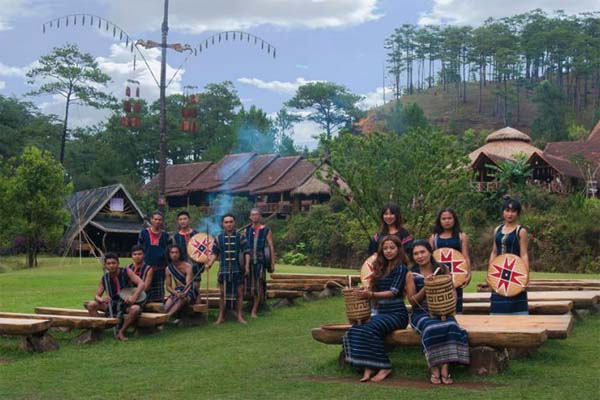
Núi Lang Biang: Đây là điểm du lịch thu hút du khách, nằm cách tp Đà Lạt 12km, địa phận thị trấn Lạc Dương, huyện An Dương. Núi có độ cao 2.169m, là điểm thăm quan được nhiều bạn trẻ đến khám phá nhất.
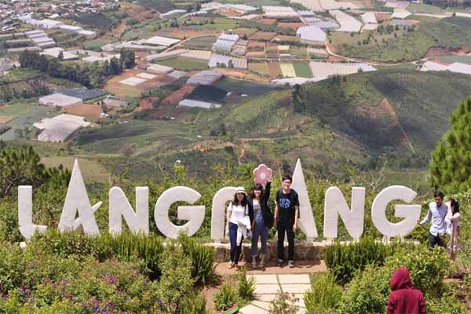
Đồi Mộng Mơ: là khu du lịch mới kết hợp nét truyền thống với hiện đại. Đồi mộng mơ có hồ nước riêng, nhà hàng, quầy bán đồ lưu niệm, khu vui chơi giải trí, ca nhạc, đặc sắc…
Ma Rừng Lữ Quán: Là điểm du lịch độc đáo, có tên khá kỳ lạ. Nơi đây được nhiều khách đi phượt săn lùng.
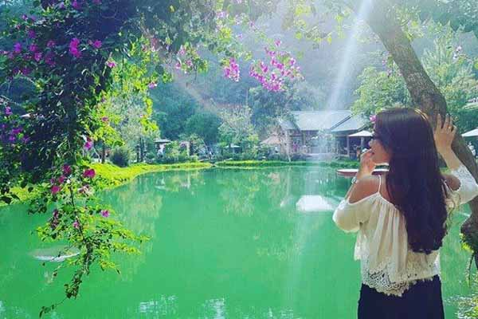
Địa Điểm Du lịch Tâm Linh Tại Đà Lạt.
Dinh Bảo Đại: là vị vua cuối cùng của triều Nguyễn, dinh được xây dựng từ năm 1933 đến 1938. Toà dinh thự được kiến trúc sư người Pháp thiết kế vì thế mang phong cách kiến trúc châu Âu.
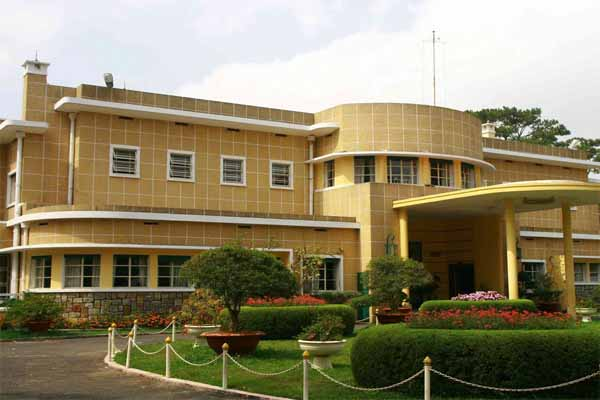
Biệt điện Trần Lệ Xuân: nơi đây có 3 biệt thự (Hồng Ngọc, Lam Ngọc và Bạch Ngọc), được đánh giá là “đệ nhất Trời Nam” có diện tích 13.000m2 xây dựng vào năm 1958 toạ lạc trên đồi Lam Sơn, cách trung tâm Đà Lạt 3km.
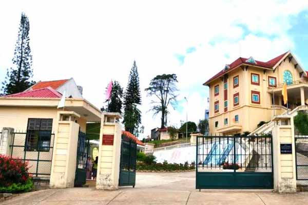
Thiền viện Trúc Lâm: Xây dựng vào năm 1993, khánh thành 19/3/1994. Mang một vẻ đẹp tĩnh lặng, thoát tục, là điểm thăm quan lý tưởng cho du khách yêu tích bình yên.
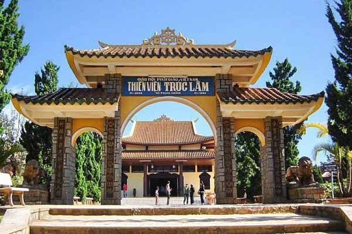
Nhà Thờ Chính Tòa: là công trình đặc sắc do người Pháp xây dựng trên đường Trần Phú, trên đỉnh tháp có một chiếc chuông hình con gà lớn.
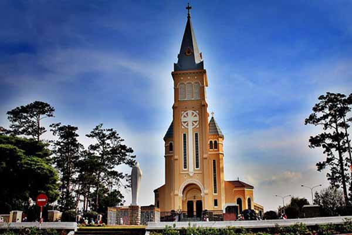
Trường Cao đẳng Sư phạm Đà Lạt: Là một công trình kiến trúc đặc trưng tại Đà Lạt, là công trình được hội kiến trúc sư thế giới công nhận là 1 trong 1000 công trình độc đáo của thế kỷ 20.
Ngoài ra, Đà Lạt còn nhiều điểm đến hấp dẫn khác không thể chia sẻ trong bài viết này được, bạn hãy hành trình du lịch Đà Lạt sẽ thấy được vẻ đẹp của thành phố mộng mơ này.
Mọi thông tin chi tiết về chương trình và đặt tour du lịch Đà Lạt, quý khách tại bất kỳ tỉnh thành nào trên cả nước có thể liên hệ về cho công ty Du Lịch Việt về đường dây nóng 0938.080.224 – 0903.091.820 hoặc liên hệ và để lại yêu cầu. Công ty sẽ cho nhân viên gọi lại để tư vấn quý khách, chương trình ưu đãi đang được triển khai.
Du Lịch Việt chúc quý khách có một chuyến nghỉ dưỡng đầy ý nghĩa.